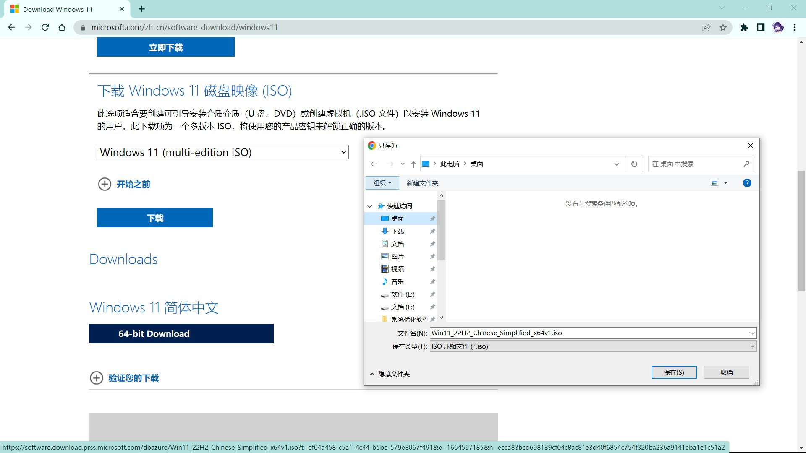
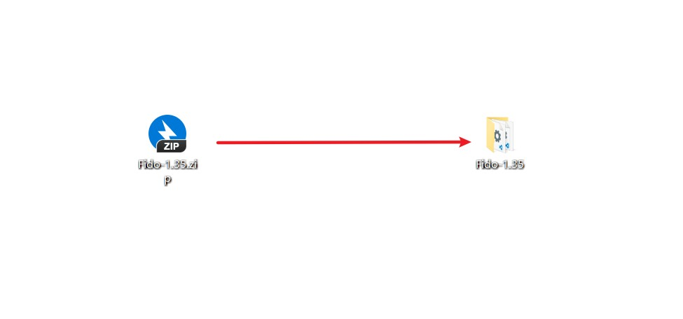

众所周知，Windows重装系统第一步也是最重要的一步，就是选择ISO（系统镜像文件）。但是网上搜索Windows的ISO，又怕不是官方原版的镜像。因为第三方的ISO很有可能会被他人植入一些其他东西，万一其中包含流氓软件或病毒那就更麻烦了。因此，选择一个令人放心的ISO下载网站就显得尤为重要了。
几个安全放心的ISO下载网站
1、MediaCreationTool
网站链接： https://www.microsoft.com/zh-cn/software-download/home
微软官方下载地址，可下载Win11、Win10、Win8.1、Win7
优点：官方网站，用着放心
缺点：版本选项少，下载速度慢
下载方法1（下载为最新ISO，但下载速度巨慢）
1、进入网站
2、选择版本，这里以Win11为例
3、找到下图位置进行操作
4、选择语言
5、下载
6、选择保存位置
下载方法2（速度快，但ISO内部的版本选择较少）
1、进入网站

2、下载此文件
3、选择保存位置

4、运行下载好的文件

5、下一步
6、下载ISO文件
7、选择保存位置
2、系统库
网站链接： https://www.xitongku.com/
系统库下载地址，可下载所有Windows版本的ISO
优点：版本全，下载方式多，且页面对新手友好
下载方式
1、进入网站
2、选择版本，这里以Win11为例
3、下载

4、选择下载方式
3、itellyou
网站链接： https://next.itellyou.cn/Identity/Account/Login?ReturnUrl=%2FOriginal%2FIndex
itellyou下载地址，可下载所有Windows版本的ISO，网站前身为MSDN，我告诉你
优点：版本齐全，界面对新手友好
缺点：需要登录，需要迅雷下载
下载方式
1、进入网站，并选择一种方式登录
2、登录后，选择版本
3、这里以Win11为例
4、选择你需要的ISO进行下载
5、各版本展示
4、HelloWindows
网站链接： https://hellowindows.cn/
HelloWindows下载地址，可下载Windows所有版本，还有Office
优点：版本齐全，界面对新手友好，还有附带的工具
下载方式
1、进入网站

2、选择版本，这里以Win11为例
3、选择下载方式
4、使用迅雷下载
5、MSDN，我告诉你
网站链接： https://msdn.itellyou.cn/
MSDN，我告诉你下载地址，网站作者已移至新网站itellyou更新，Windows老版本可在此下载，新版本不推荐在此站下载
优点：老版本丰富
缺点：新版本不更新
下载方式
1、进入网站
2、选择版本，这里以Win10为例
3、可捐赠，也可不捐赠
6、UUP dump
网站链接： https://www.uupdump.cn/
UUP dump下载地址，可下载最新的ISO
优点：ISO版本最新，选择自由度高
缺点：对新手不友好，下载耗时长
下载方式
1、进入网站

2、选择版本，这里以Win11为例

3、选择版本，这里以Win11为例

4、选择语言

5、选择需要的版本

6、根据需要选择

7、选择下载位置

7、Windows ISO Downloader
这款小工具是直接可以从微软官方网站获取下载链接，可以下载Windows 10教育版、专业版、家庭版。还可以下载Office的原版镜像。
下载方式
1、进入网站

2、运行软件

3、选择版本

4、选择语言

5、下载

8、Fido
网站链接： https://github.com/pbatard/Fido/releases
这款小工具为开源项目，也是直接从微软官方网站获取下载链接，可以下载Windows 10教育版、专业版、家庭版。下载后，鼠标右键“Fido.ps1”，使用PowerShell运行，然后选择相应的版本、语言等信息。
下载方式
1、进入网站
2、解压缩，打开文件夹
3、鼠标右键“Fido.ps1”，使用PowerShell运行
4、选择版本
5、下一步
6、选择版本号
7、下一步
8、选择包含的版本
9、选择语言

10、选择位数，直接下载